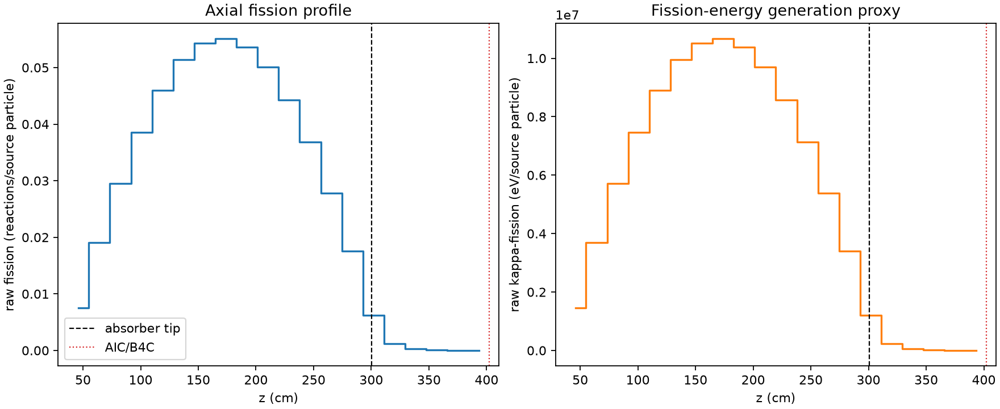
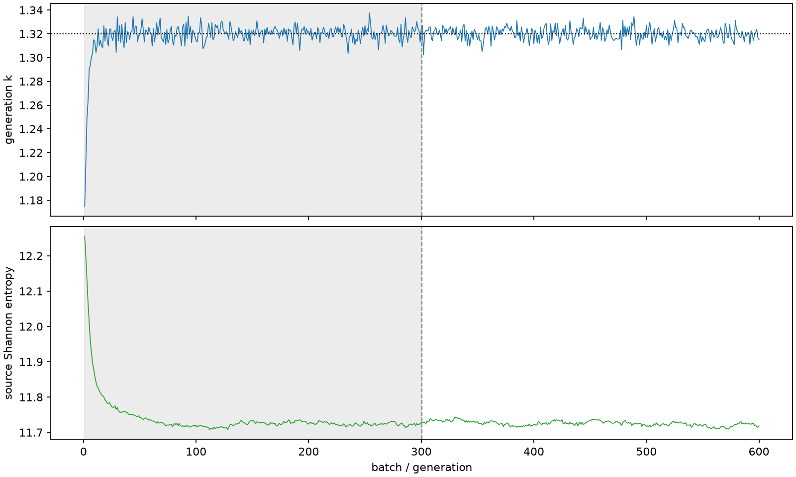

| field | value |
|---|---|
| experiment | V2-STAGE_128_OGRENCI_02-0007 |
| k | 1.3201041772033721 |
| MC standard error | 0.00018995491245057757 |
| seconds | 1110.9534139290008 |
| acceptance | not_assessed |
| convergence | review_required |
Completed is output integrity only; physical and statistical review required. Zero tallies do not prove zero production or zero uncertainty.
| diagnostic | value |
|---|---|
| geometric fuel voxels | 5280 |
| zero fission tally voxels | 0 |
| low signal fuel voxels | 628 |
| low signal fission share | 8.134220126540433e-05 |
| low signal kappa share | 8.137519871704892e-05 |
| important fission share | 0.950092530999479 |
| previous filter included | 4652 |
| duration estimate s | 1562.5173488400023 |
| actual minus estimate s | -451.5639349110015 |
| fission relative MC error | statistics |
|---|---|
| all_geometric_fuel | {"voxels": 5280, "positive_mean_voxels": 5280, "zero_mean_voxels": 0, "undefined_relative_error_voxels": 0, "median": 0.010374330319576512, "p95": 0.4630686590274866, "maximum": 0.9999999999999999} |
| low_signal | {"voxels": 628, "positive_mean_voxels": 628, "zero_mean_voxels": 0, "undefined_relative_error_voxels": 0, "median": 0.4171676791257502, "p95": 0.8722163399501263, "maximum": 0.9999999999999999} |
| important_95pct | {"voxels": 3255, "positive_mean_voxels": 3255, "zero_mean_voxels": 0, "undefined_relative_error_voxels": 0, "median": 0.00845291708664977, "p95": 0.012792640679376127, "maximum": 0.016190626943210683} |
| outside_previous_filter | {"voxels": 628, "positive_mean_voxels": 628, "zero_mean_voxels": 0, "undefined_relative_error_voxels": 0, "median": 0.4171676791257502, "p95": 0.8722163399501263, "maximum": 0.9999999999999999} |
| kappa_fission relative MC error | statistics |
|---|---|
| all_geometric_fuel | {"voxels": 5280, "positive_mean_voxels": 5280, "zero_mean_voxels": 0, "undefined_relative_error_voxels": 0, "median": 0.010364218856600459, "p95": 0.46276510749999394, "maximum": 1.0000000000000002} |
| low_signal | {"voxels": 628, "positive_mean_voxels": 628, "zero_mean_voxels": 0, "undefined_relative_error_voxels": 0, "median": 0.4165754560904905, "p95": 0.871399092104695, "maximum": 1.0000000000000002} |
| important_95pct | {"voxels": 3255, "positive_mean_voxels": 3255, "zero_mean_voxels": 0, "undefined_relative_error_voxels": 0, "median": 0.008444268907572739, "p95": 0.012780113510662685, "maximum": 0.016171214366573965} |
| outside_previous_filter | {"voxels": 628, "positive_mean_voxels": 628, "zero_mean_voxels": 0, "undefined_relative_error_voxels": 0, "median": 0.4165754560904905, "p95": 0.871399092104695, "maximum": 1.0000000000000002} |
| axial bin | fission share | kappa-fission share |
|---|---|---|
| 1 | 0.013972407707149158 | 0.013972895812511732 |
| 2 | 0.0353063774458826 | 0.035306277370327224 |
| 3 | 0.05468747195396157 | 0.05468741161615219 |
| 4 | 0.07151152851805236 | 0.07151119847849705 |
| 5 | 0.08532440212482571 | 0.08532402884117249 |
| 6 | 0.09532434840610944 | 0.09532409896748471 |
| 7 | 0.1006311565791696 | 0.1006309321811288 |
| 8 | 0.10210913156299838 | 0.10210872149221324 |
| 9 | 0.09943397508087883 | 0.09943389435353761 |
| 10 | 0.09283352170621209 | 0.09283329151408708 |
| 11 | 0.08204988783236099 | 0.08204978312377463 |
| 12 | 0.06822214510197833 | 0.06822184715874649 |
| 13 | 0.05153205143043757 | 0.05153180449372881 |
| 14 | 0.03253630931080671 | 0.032536238413278955 |
| 15 | 0.011585143049985655 | 0.011586412261824271 |
| 16 | 0.0022527001127512747 | 0.0022534764074748337 |
| 17 | 0.0005279891308192993 | 0.0005281715699153955 |
| 18 | 0.00012319879958416888 | 0.0001232467131600522 |
| 19 | 3.1129173087600716e-05 | 3.114126660841906e-05 |
| 20 | 5.12497294868398e-06 | 5.127964375903535e-06 |
Histories include the inactive-to-active transition at batch 300. kappa-fission approximates fission energy production, not total heat deposition.

